CATEGORIES
 All
All
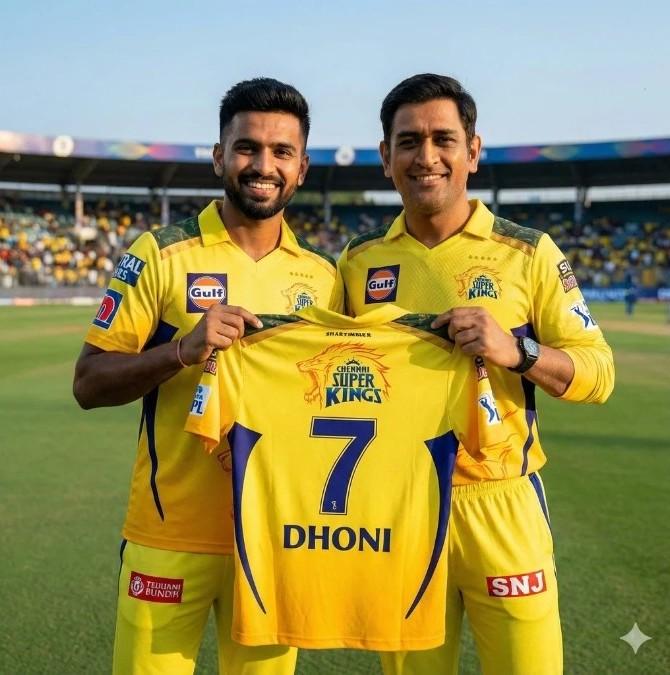
Celebrity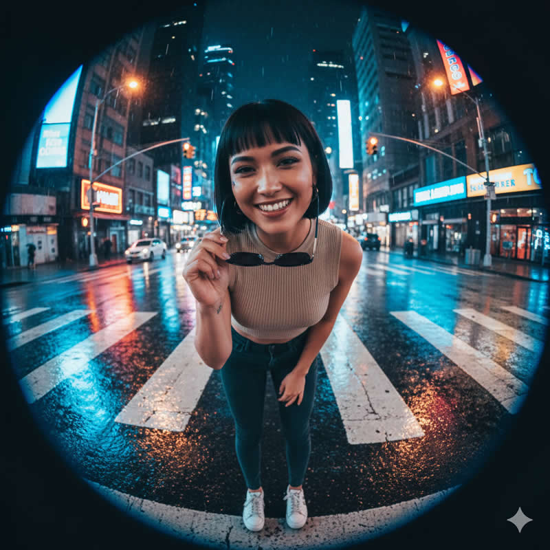
Fantasy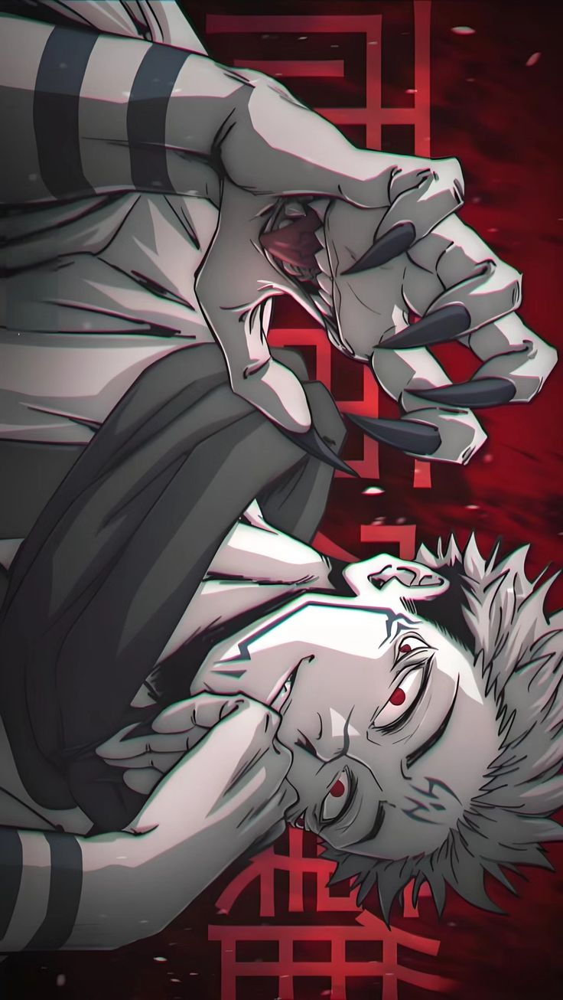
Anime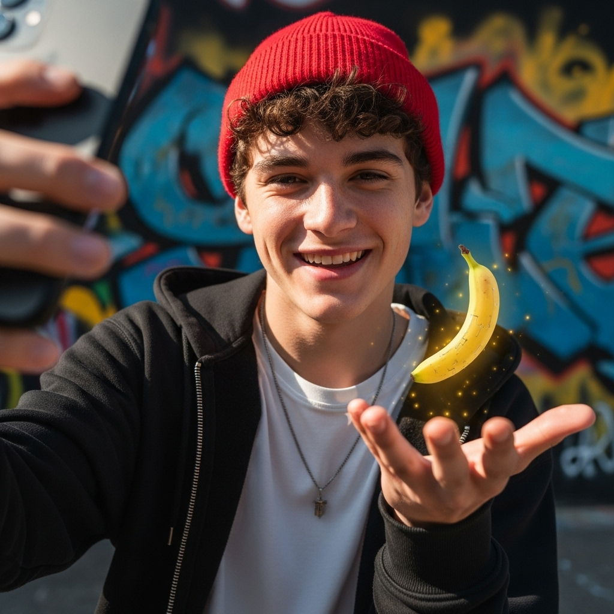
Portrait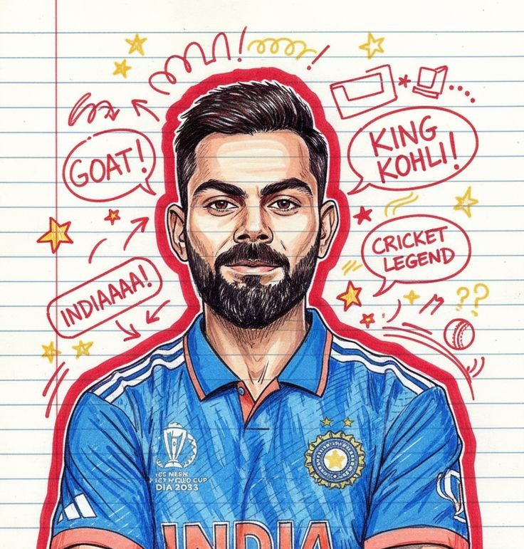
SketchTRENDING PROMPTS
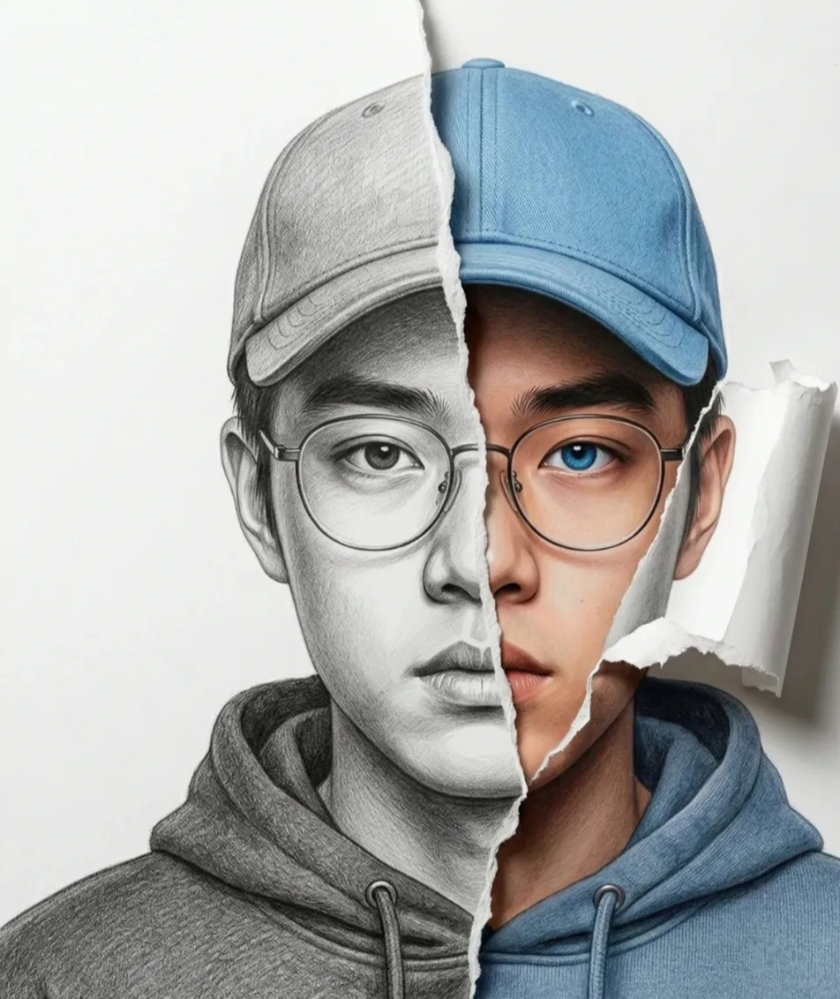
Graphite Portrait
graphic_mixx "{action": "image_edit", "action_input": "Transform this portrait into a museum-quality graphite and mixed-media artwork. The composition remains centered against a pristine white background. The left half of the face should be rendered entirely in ultra-detailed graphite pencil with soft layered shading and subtle crosshatching. The right half is revealed through a dramatic vertical torn-paper opening, showing hyper-realistic color with a vivid blue eye and natural skin undertones. Add a sky-blue cap worn naturally on the head, with the fabric transitioning from color on the right to graphite shading on the left. The torn paper edges should curl outward, casting soft, realistic shadows to create depth. Maintain the subject's features and intense gaze while applying this fine art realism style.}"
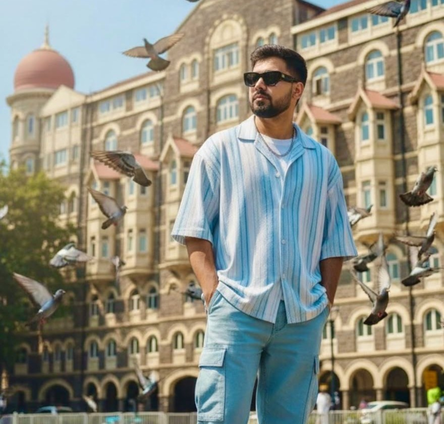
Street Portrait
Full-body ultra-realistic portrait of the same young man (use reference face and hairstyle) standing casually near the iconic backside of the Grand Hotel Mumbai, bright sunny daylight, soft cinematic glow. Dozens of pigeons flying dynamically in the air, adding natural motion. Outfit: light blue-and-white wide-stripe oversized half-sleeve shirt, relaxed light-blue cargo pants, sleek black sunglasses, subtle silver chain, and black-white sneakers. Hands casually in pockets, confident.
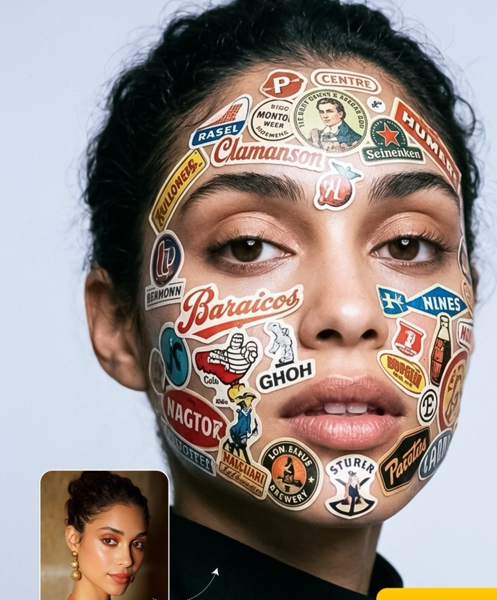
Sticker Portrait
Use the uploaded portrait as the exact facial reference. Preserve full identity and facial structure. Do not alter features. Centered head-and-shoulders portrait, Slightly lifted chin. Mouth slightly open. Strong fashion presence. Lighting: Soft but directional studio lighting. Even beauty-style key light from front. Subtle shadow under jaw and cheekbones. Natural skin highlights. Not flat- gentle contrast. High-end editorial beauty lighting. Background: Clean light neutral backdrop (soft off-white or pale gray). Minimal and smooth. Outfit: Structured black high-neck garment. Matte black fabric. Minimalist fashion styling. Clean silhouette. Sticker composition: Cover the entire face densely with curated colorful stickers. Layered but visually balanced. Vintage logos, typography, mini illustrations, symbols. Stickers must follow facial curvature. Natural adhesive texture. Slight shadows and realistic edge lift. Some overlap. High realism. Do not look digitally pasted. Eyes remain visible. Lips partially visible. Aesthetic treatment: Slight desaturation. Subtle film grain. Soft cinematic texture. Editorial fashion magazine vibe. Balanced colors, not overly saturated. Clean but artistic. Ultra high resolution. Sharp focus. Photorealistic finish.
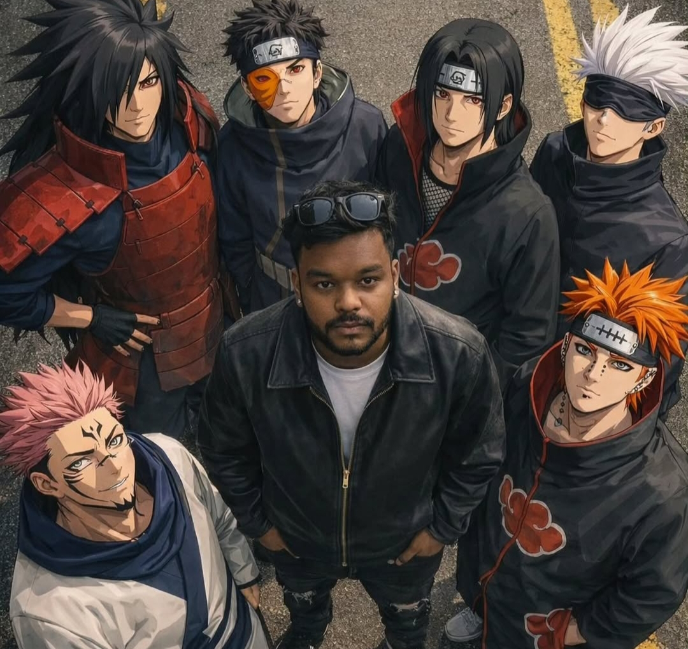
Hybrid Real-Life Anime Scene
Create a cinematic hybrid real-life + anime group scene from a high top-down camera angle, matching the same road background, double yellow lines, framing, and composition as the reference image. The characters stand together in a tight formation, looking upward toward the camera with confident, serious expressions. Keep the same vertical perspective, spacing, and street texture. Main Human Subject (Center). Place me in the middle of the group as a real-world human boy using my face reference.
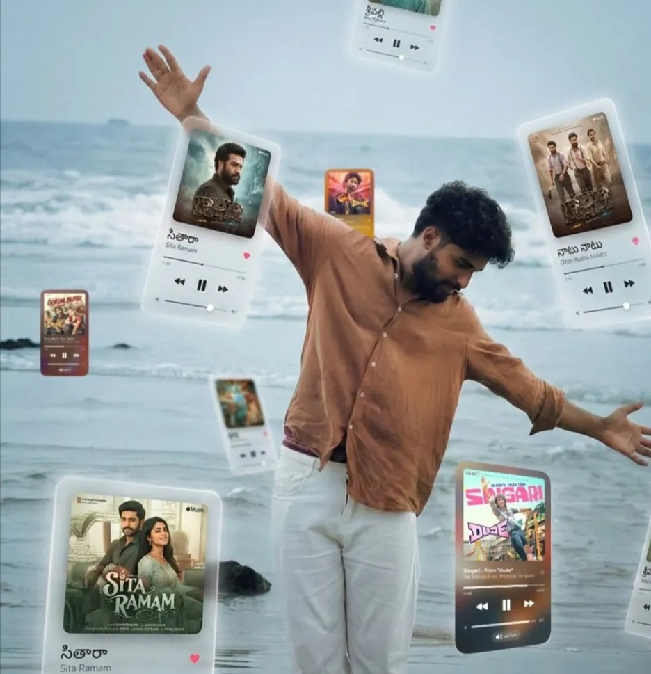
Reality Music Visual
A surreal, movie-quality augmented-reality visual where multiple floating music player interface cards orbit around the central subject (the person shown) in a fully realized 310 spatial composition. Each player card represents a telugu song, positioned at varying depths-some hovering boldly in the foreground and partially overlapping the subject, while others drift subtly behind and along the sides, creating immersive depth.
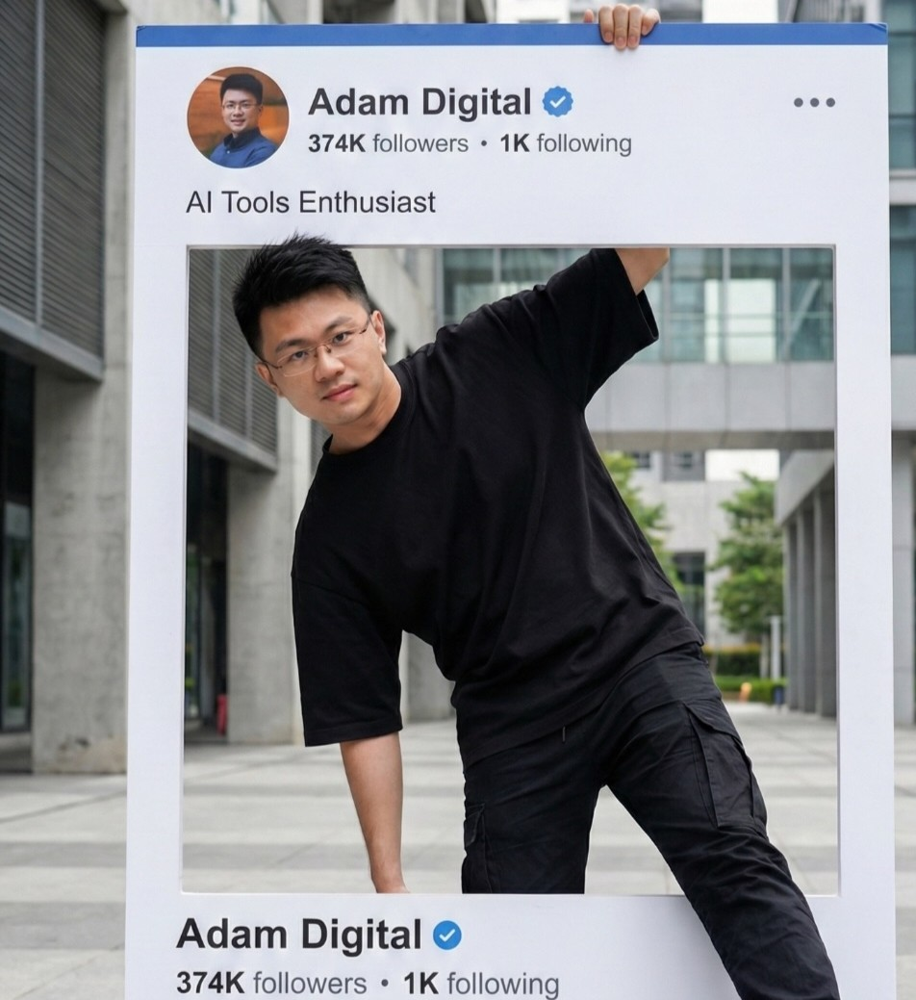
Facebook Portrait
"Ultra realistic portrait of an individual presented inside an oversized Facebook post frame that dominates the scene. Keep the face consistent and unchanged. The individual's facial features are delicate yet sharp, clean, and naturally stunning, with eyes locked on the viewer with calm, magnetic intensity and lips softly relaxed and neutral, giving a high-fashion model expression. They stand in a modern, dynamic pose: upper body leaning slightly forward, one hand casually gripping the top edge of the Facebook frame, while one leg steps outward through the frame to create a smooth and stylish 3D illusion. The Facebook frame is ultra realistic with username "Adam Digital", verified badge, display name "374K followers 1K following", caption "AI Tools Enthusiast", authentic Facebook UI icons (like, comment, share and emoji reactions), and a circular profile picture identical to the subject. The individual wears an oversized black T-shirt, black cargo pants, and clean sneakers in a relaxed, modern streetwear look."
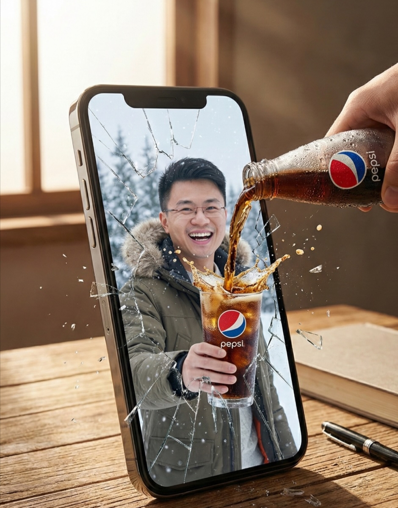
Pepsi Commercial
"100% real human face. A hyper-realistic surreal composite scene set on a wooden tabletop. A large oversized smartphone dominates the frame, creating a strong dimensional-break illusion. On the phone screen, the man from the reference image appears much larger in a close-up winter environment, smiling happily while holding a clear glass with a visible Pepsi logo on it. A real human hand pours dark Pepsi cola from a cold bottle covered in condensation droplets directly toward the phone screen. The liquid visually breaks through the display and flows into the glass he is holding inside the screen, creating a powerful surreal effect. A closed book and a black pen sit on the wooden table beside the oversized phone to emphasize scale distortion. Warm natural lighting, soft cinematic shadows, ultra-sharp liquid splash details, hyper-realistic skin texture, realistic reflections on glass and screen, surreal cinematic advertising look, professional commercial photography quality, 8K realism.
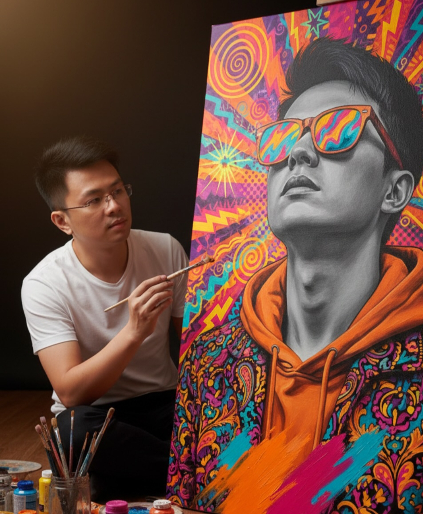
Pop-Art Portrait
"Create a hyper-realistic scene of The canvas frame shows a bold, colourful pop-art portrait of the same man. The painting includes: A realistic grayscale portrait looking upward at about 45 degrees Oversized sunglasses with neon orange, electric blue, hot pink reflective colours. A hoodie or jacket with multi-colour paisley/baroque patterns (orange, teal, pink, purple, gold, black). A vibrant orange hood underneath Lower area with vivid painted fabric textures in orange, magenta, turquoise. Pop-Art Background Patterns (On the Canvas) Use a high-energy mix of: Neon spirals, Radiating sunbursts, Comic halftone dots, Lightning zig-zags, Stars, Wavy lines, Crosshatching, Brushstroke textures All in bright colours like orange, yellow, pink, purple, teal and black, layered together to feel hand-painted and explosive. Scene Environment: The man sits comfortably on the left. The canvas is on the right, facing him. He holds a paintbrush near the canvas. Paint tubes, colour palettes and brushes scattered around. Warm, soft studio lighting. Visible canvas texture and real acrylic paint strokes. Style: Hyper-realistic man Canvas art is colourful pop-art with bold outlines and layered paint textures. High saturation, strong contrast, energetic vibe. Negative Prompt: No cartoon bodies, no flat vector look, no distortions, no muted colours."
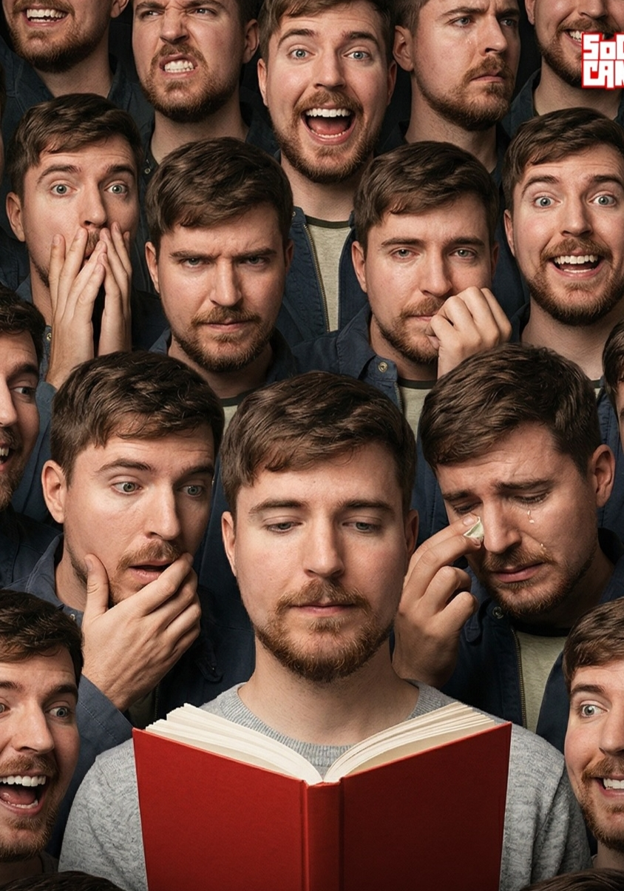
Composite Portrait
A hyper-realistic, cinematic composite portrait featuring multiple versions of the same person (based on the uploaded reference image) arranged in a dense, layered composition. Each version of the subject displays a different emotional expression, including: joy, shock, curiosity, fear, sadness, confusion, excitement, deep thought, amusement, and surprise. The central figure is positioned slightly forward, holding an open book, reading calmly with a neutral or focused expression. Surrounding versions of the same person are tightly packed in the background, overlapping slightly, each showing unique facial emotions and natural gestures (hands on face, covering mouth, scratching head, smiling, frowning, etc.). Face consistency is critical- all versions must clearly resemble the uploaded reference image, maintaining identical facial structure, hairstyle, skin tone, and lighting coherence. Lighting & Mood: Soft studio lighting with warm tones, subtle shadows, and high dynamic range. Dramatic but natural lighting that enhances facial expressions. Background is dark and minimal to emphasize faces. Styling: Clothing: simple, neutral outfit (e.g, casual shirt or jacket) consistent across all duplicates Color palette: warm, earthy tones with a strong contrast (like beige, brown, muted blue) Emotional storytelling and expressive realism Composition: Tight framing with faces filling the frame Depth layering: foreground (main subject), mid-layer, background faces Slight variation in head angles and eye directions for realism No distortion or surreal exaggeration - keep it photorealisticDetails: Ultra-detailed skin texture, natural imperfections, realistic eyes, sharp focus DSLR quality, 85mm lens look, shallow depth of field, studio-grade clarity. use Ist image and 2nd image i for reference i Want 9:16 size
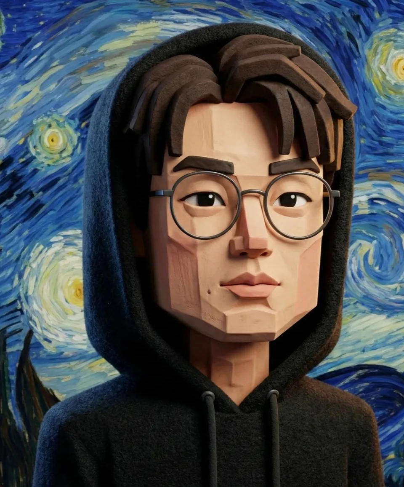
Stylized 3D Portrait
Create a highly stylized 3D character portrait with a blocky, geometric voxel-like form and a handcrafted clay / foam micro-particle texture, inspired by painterly stop-motion aesthetics. Use the person from the ATTACHED REFERENCE PHOTO. Preserve the person's identity, facial structure, proportions, skin tone, and key features, but reinterpret them into a cuboid, low-poly caricature form with simplified geometry, squared facial planes, and intentionally rigid structure. Apply a dense tactile surface made of tiny bead-like or felted particles across all visible elements for a handcrafted look. Render against a swirling, painterly, post-impressionist background with thick directional strokes and vibrant motion, evoking a dreamlike night-sky energy. Lighting should be soft but directional, with warm highlights and gentle shadow falloff to enhance texture depth without realism. The overall look should feel artistic, whimsical, museum-grade, and handcrafted, not photoreal, not Pixar, not vinyl, not glossy CGI. Ultra-high detail, clean edges, intentional stylization, no text, no logos, no watermarks. Aspect ratio 4:5
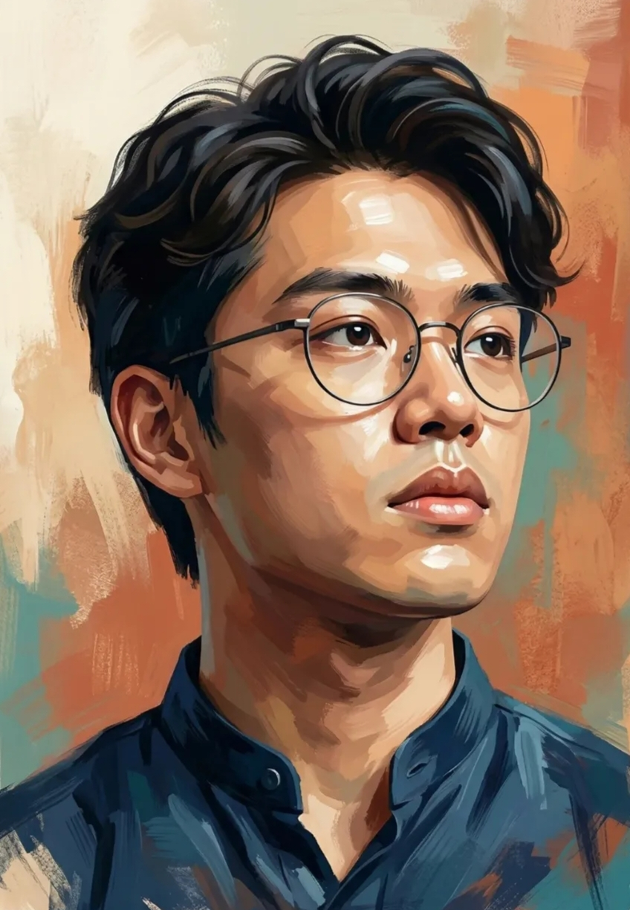
Emotional Portrait
CREATE A 4K ULTRA-DETAILED DIGITAL PORTRAIT PAINTING. A PERSON SHOWN FROM THE SHOULDERS UP IN A THREE-QUARTER VIEW, LOOKING SLIGHTLY UPWARD AND TO THE RIGHT WITH A THOUGHTFUL, DETERMINED EXPRESSION. ACCURATELY MATCH IDENTITY, FACIAL STRUCTURE, PROPORTIONS, HAIRSTYLE, AND HAIR TEXTURE FROM THE REFERENCE IMAGE. LIGHTING: SOFT WINDOW LIGHT FROM THE FRONT, GLOSSY PAINTED HIGHLIGHTS ON FOREHEAD, NOSE BRIDGE, CHEEKBONES, CHIN, AND LIPS. SUBTLE SHADOW PATTERNS ACROSS THE FACE. RENDERING: ULTRA-DETAILED, PAINTERLY BRUSH STROKES, VISIBLE SKIN TEXTURE AND INDIVIDUAL HAIR STRANDS. CLOTHING: DARK BLUE KURTA SHIRT, MINIMAL DETAIL BUT EXPRESSIVE BRUSH STROKES. BACKGROUND: ABSTRACT PAINTERLY BACKDROP WITH CREAM, ORANGE, TERRACOTTA, AND TEAL TONES, TEXTURED ACRYLIC STYLE. LOWER FADE: PORTRAIT DISSOLVES INTO BRUSH STROKES TOWARD THE BOTTOM. STYLE: MODERN EDITORIAL ILLUSTRATION, ACRYLIC + OIL PAINTING MIX, HIGH COLOR DEPTH, SHARP FACE DETAIL. RESOLUTION: 4K, ULTRA-SHARP, ASPECT RATIO 4:5.
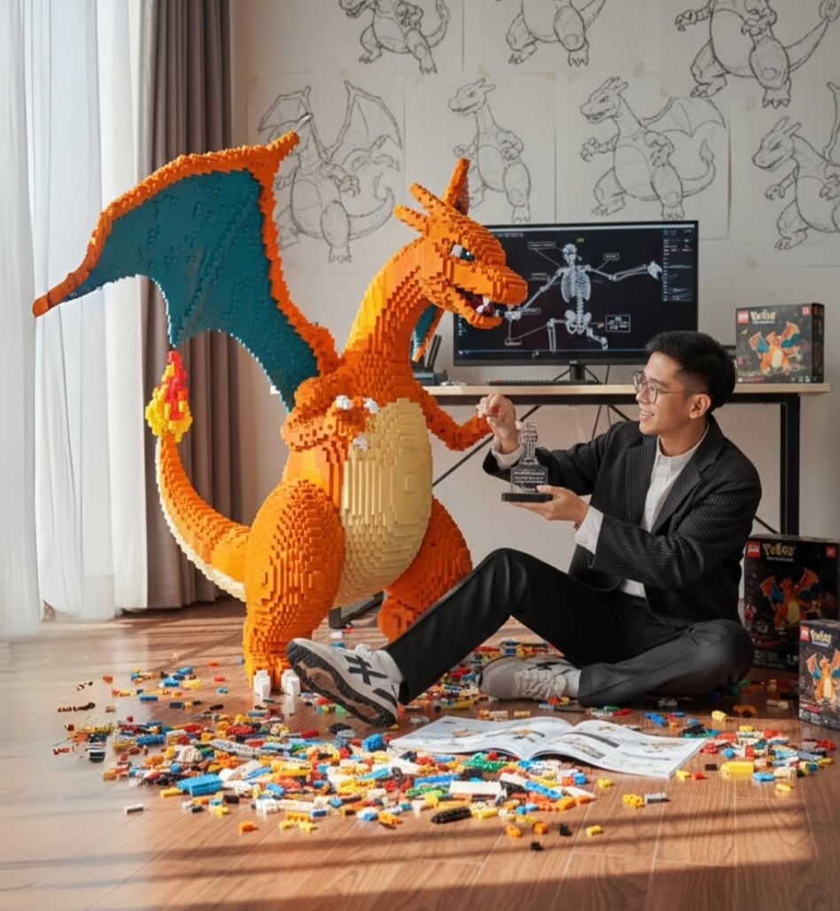
LEGO Charizard Portrait
Refer to attached photo for main character: facial features, hairstyle, outfit, expression] A young man (from the attached photo) with a blazer and white shirt is seated on the floor, one leg stretched out and the other bent, while precisely attaching articulated LEGO pieces to the wing of a towering charizard statue. The full-scale charizard is built entirely out of cool-toned orange, red, yellow, white LEGO bricks, poised in a martial-arts stance that radiates elegance and strength. Around him, thousands of LEGO pieces sprawl across the polished wooden floor, mixed with open manuals and charizard-branded LEGO packaging. Behind the character, a minimalistic desk supports a digital screen displaying charizard's skeletal build, and nearby walls are covered with penciled sketches of movement and aura-based attacks. Sunlight streams gently from the side window, highlighting the subtle tension in the charizard's pose and the creator's meticulous handwork. Shadows fall softly, adding cinematic realism. The scene captures a sense of focused solitude and artistic flow, framed in vertical 9:16 for a vertical storytelling